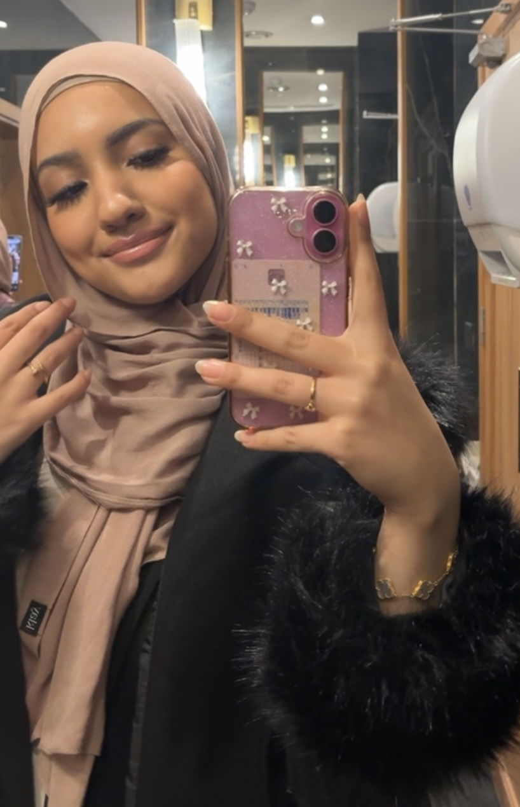

Introduktion

Hej, jeg hedder Batul Al Marie. Jeg læser nu IT Arkitektur (PBA) på Erhvervsakademi København, hvor jeg kombinerer min teknologiske nysgerrighed med mine stærke praktiske kompetencer.Jeg er en engageret, udadvendt og ansvarsbevidst holdspiller, der gennem flere år i detailbranchen – herunder hos Normal og Beautycos – har opbygget solid erfaring med kundeservice, rådgivning og visual merchandising. Jeg har en stor passion for kosmetik og skønhedstrends, og jeg motiveres altid af at skabe gode, strukturerede oplevelser og finde de helt rigtige løsninger.Som person elsker jeg at lære nyt, tage ansvar og bygge bro mellem godt samarbejde og stærke resultater. Velkommen til mit portefølje!
Uddannelse
-
Erhvervsakademi København
It Arkitektur (2026 - 2029)
-
Gymnasial uddannelse STX
Nørrebro gymnatium (2023 - 2025)
Erhvervserfaring
-
Makeup Ansvarlig
Normal (2023 - Nu)
-
Butiksassisent
Beautycos (2021 - 2022)